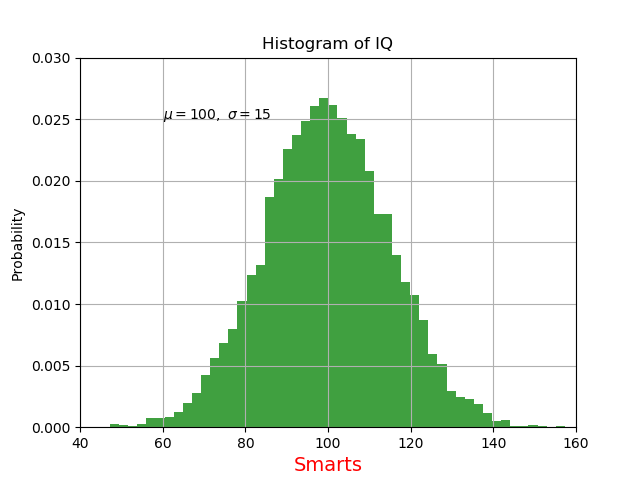
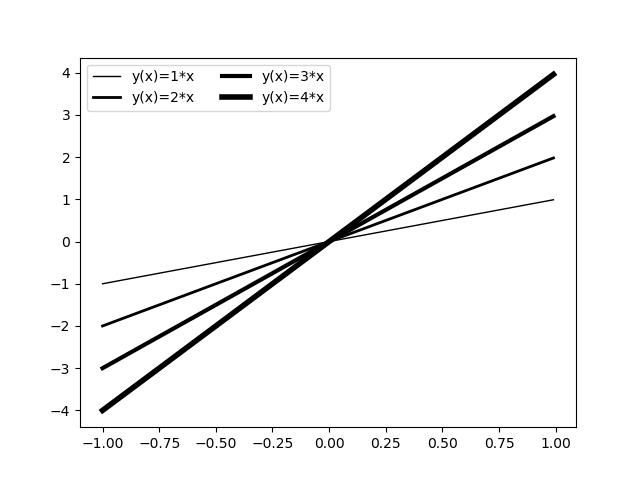

https://matplotlib.org/tutorials/text/text_props.html
https://matplotlib.org/tutorials/text/mathtext.html
A common use for text is to annotate some feature of the plot, and the annotate() method provides helper functionality to make annotations easy.
# Font options. fontsize=12 family="serif" # or fontfamily or fontname backgroundcolor="white" color="red" alpha=0.5 # the alpha value used for blending (alpha=0 invisible) rotation=45 # the rotation angle in degrees (counterclockwise)
# https://matplotlib.org/stable/api/_as_gen/matplotlib.pyplot.title.html
# matplotlib.pyplot.title(label, fontdict=None, loc=None, pad=None, *, y=None, **kwargs)
# Set a title for the Axes.
# loc : 'left', 'right', 'center' (default)
plt.title('Special functions', loc='left', color='red')
# https://matplotlib.org/stable/api/_as_gen/matplotlib.pyplot.xlabel.html
# https://matplotlib.org/stable/api/_as_gen/matplotlib.pyplot.ylabel.html
plt.xlabel('x', color='green')
plt.ylabel('y')
# https://matplotlib.org/stable/api/_as_gen/matplotlib.pyplot.text.html # matplotlib.pyplot.text(x, y, s, fontdict=None, **kwargs) # x, y : scalars, the position to place the text # s : string, the text plt.text(11, 26, "Message", fontsize=12, color="black") plt.text(120, .025, r'$\alpha=5,\ \delta=10$') # raw strings for TeX expressions
# https://matplotlib.org/tutorials/text/annotations.html
# https://matplotlib.org/gallery/text_labels_and_annotations/annotation_demo.html
# matplotlib.pyplot.annotate(text, xy, *args, **kwargs)
# text : the text of the annotation
# xy : the point (x,y) to annotate
# xytext : the location (xt, yt) of the text
plt.annotate("Info", (1.5, 0.5))
# https://matplotlib.org/stable/api/_as_gen/matplotlib.pyplot.legend.html
# matplotlib.pyplot.legend(*args, **kwargs) # use after plot()
#
# Call signatures:
# plt.legend() # automatic detection of elements to be shown in the legend
# [use label="..." in plot() or scatter()]
#
# plt.legend(loc="best") # location (default)
# loc=1 or loc='upper right',
# loc=2 or loc='upper left',
# loc=3 or loc='lower left',
# loc=4 or loc='lower right',
# loc='center left', 'center right', 'center', 'upper center', 'lower center'
#
# plt.legend(ncol=n) # the number of colums in the legend
#
# plt.legend(labels) # labeling existing plot elements
# plt.legend(['A simple line']) # problems when many lines
#
# plt.legend(handles, labels)
# explicitly defining the elements in the legend
line1, = plt.plot(x, y1)
line2, = plt.plot(x, y2)
line3, = plt.plot(x, y3)
plt.legend((line1, line2, line3), ('label1', 'label2', 'label3')) # after plot()
https://matplotlib.org/tutorials/introductory/pyplot.html
import numpy as np
import matplotlib.pyplot as plt
mu, sigma = 100, 15
x = mu + sigma * np.random.randn(10000)
# the histogram of the data
n, bins, patches = plt.hist(x, 50, density=True, facecolor='g', alpha=0.75)
#plt.xlabel('Smarts')
plt.xlabel('Smarts', fontsize=14, color='red')
plt.ylabel('Probability')
plt.title('Histogram of IQ')
# mathematical expressions (raw string, TeX expression)
plt.text(60, .025, r'$\mu=100,\ \sigma=15$')
plt.axis([40, 160, 0, 0.03])
plt.grid(True)
plt.show()

import numpy as np
import matplotlib.pyplot as plt
x = np.arange(-1, 1, .01)
for a in range(1, 5):
plt.plot(x, a*x, 'k-', lw=a, label='y(x)={}*x'.format(a))
plt.legend(ncol=2, loc=2)
plt.show()
